Portfolio
-
📝 Inspiration Board 📝
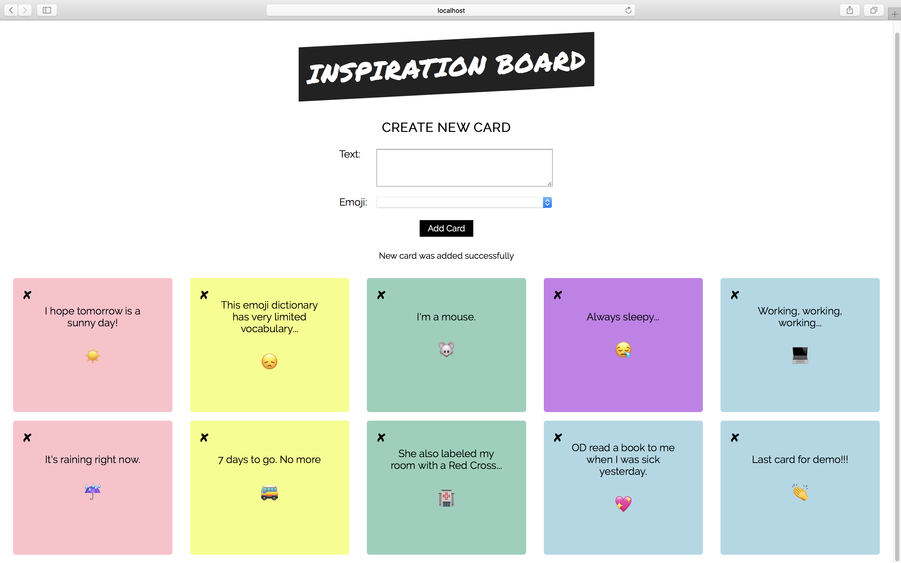An application which displays a set of cards containing inspirational quotes and emoji images. Users can add and remove cards. (React, axios, snapshot & user interaction testing, Github pages)
Date: June 2018
-
📰 MadLib 📰
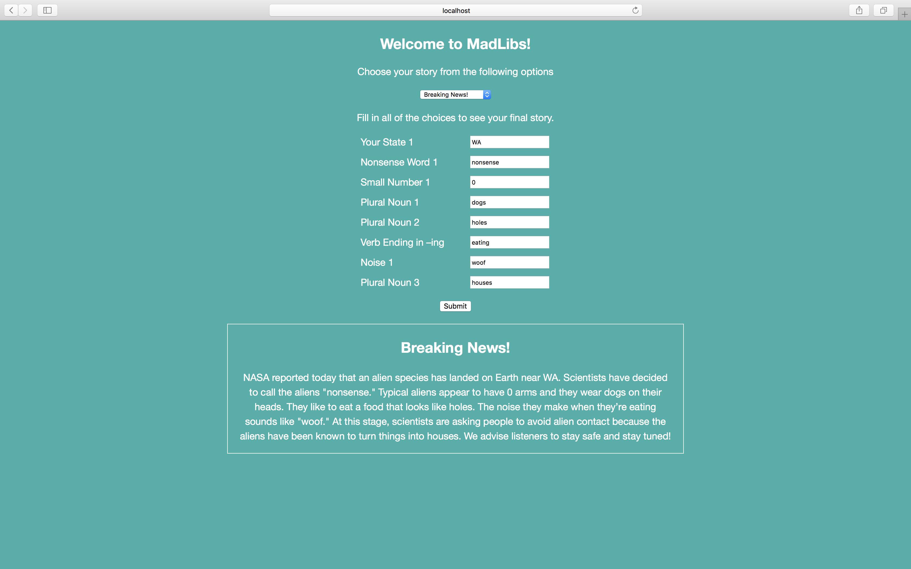A Mad Lib game implemented with React. Fill out the form and generate a story. Have fun!
Date: June 2018
-
🚯 Litter Patrol 🚯
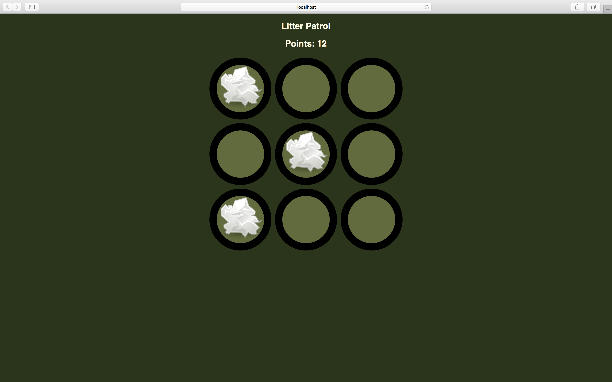A litter patrol game implemented with React! Enjoy~
Date: May 2018
-
⏰ Timeline⌇
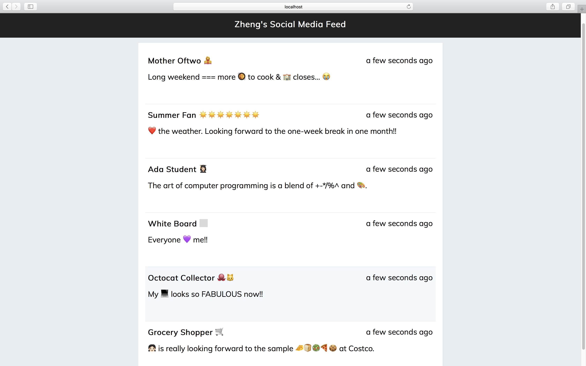A simple React app that reads information from a JSON file and displays it as a social media timeline.
Date: May 2018
-
✈️ Trek ✈️

A Single Page Application (SPA) that allows user to display, reserve, create, and search trips. Tools used include JavaScript, jQuery, API (axios), CSS Foundation, etc.
Date: May 2018
-
🍽 Muncher 🍽
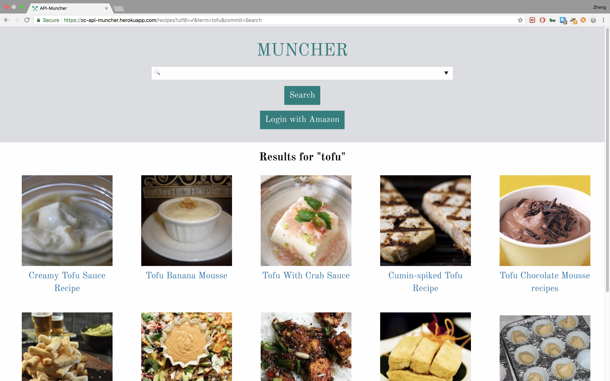A web application that will display recipes based on Search API from Edamam. Tools used include Ruby on Rails, API (Postman, HTTParty), TDD (VCR), OAuth (OmniAuth), CSS Foundation, Heroku, etc.
Date: May 2018
-
🐶 Puppsy 🐶
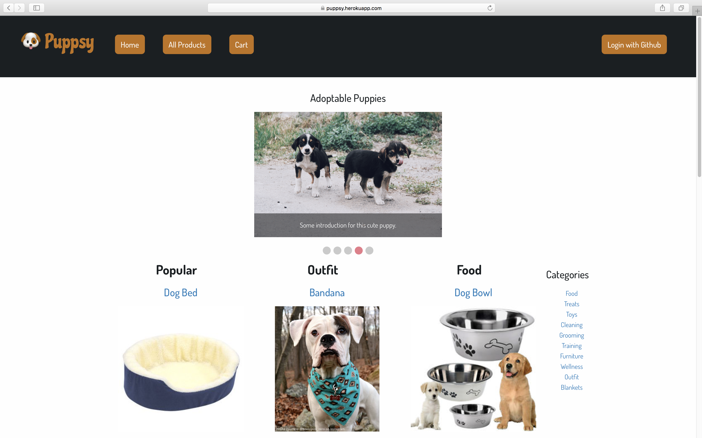An e-commerce web app implemented with Ruby on Rails, CSS Foundation, TDD (SimpleCov, Minitest), OAuth (OmniAuth), Heroku, etc. Click image and check out our deployed site on heroku.com.
Date: April 2018
-
📚 Media Ranker 📚
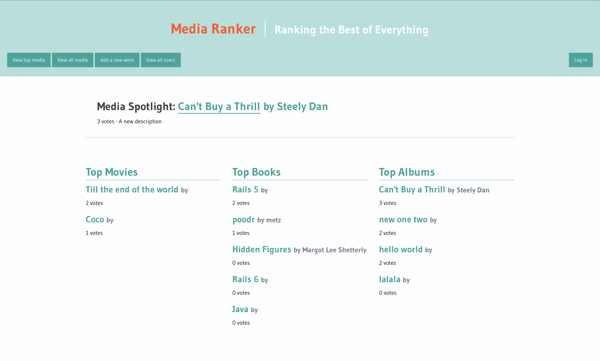A web app where users can vote for their favorite pieces of media. 🎞 📚 💽 Tools used include Ruby on Rails, CSS Foundation, and TDD (Minitest).
Date: April 2018
-
🦒 Ada Zoo 🦒
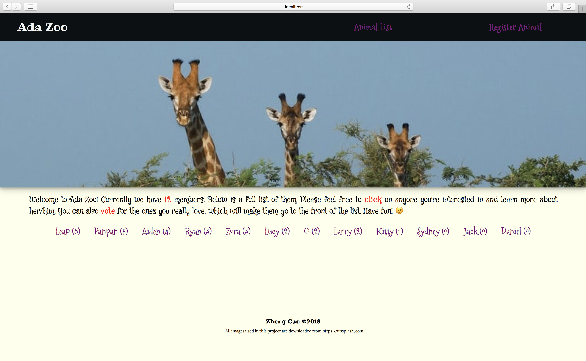Come and see what we have in our zoo. Don't forget to vote for your favorite ones. 🐶 🐱 🐼 🐯 🦁 🐸 🐊 🦒 🦓 (Ruby on Rails)
Date: March 2018
-
✅ Task List ✅

This simple task list allows user to create, update and delete, mark/unmark complete tasks. (Ruby on Rails)
Date: March 2018
-
❣️ My Portfolio Site ❣️

A static site that represents my portfolio of coding work. It's implemented with HTML and CSS, and hosted on GitHub Pages.
Date: March 2018
-
✨ Startrly ✨

A static website designed exclusively for Startrly, a start-up founded by our lovely instructors!! 🎉 (CSS Grid and Flexbox)
Date: March 2018
-
🏨 Hotel 🏨
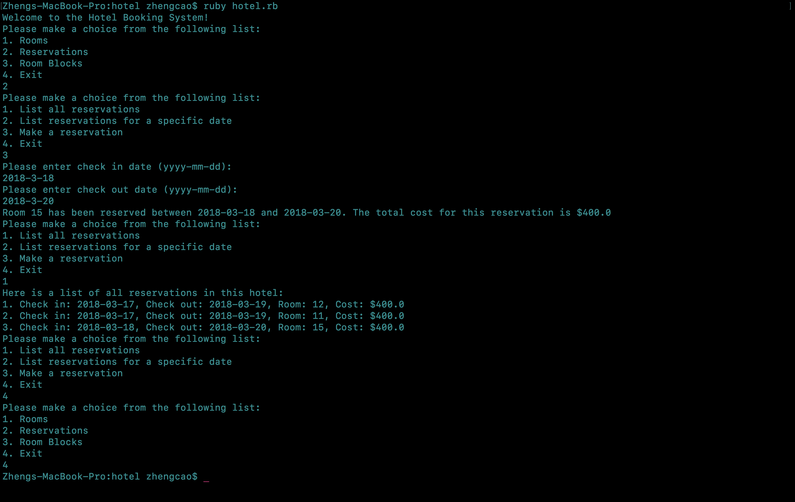A CLI program that allows a hotel administrator to access information about rooms and reservations. Techniques used include OOD and TDD (SimpleCov, Minitest).
Date: March 2018
-
🌹 Word Guess 🌹
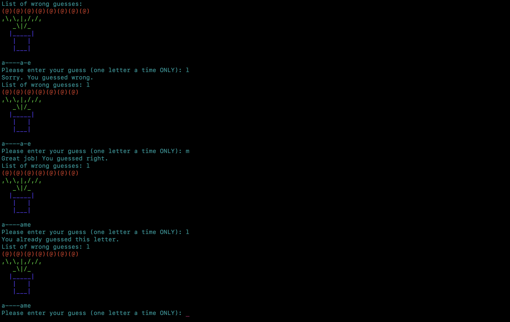A word-guess game you can play for free! This CLI program was my first pair-programming project. And it was due on Valentine's Day! Enjoy~ (Ruby, pair programming)
Date: Feb 2018
-
☀️ Solar System ☀️
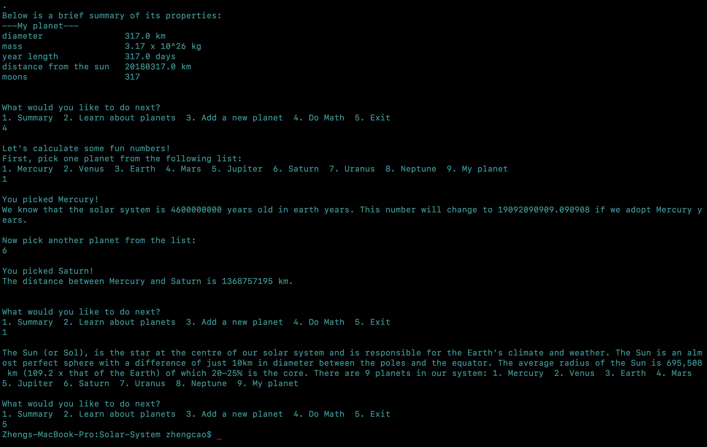A CLI program where you can learn about our solar system. You can even create a new planet from scratch if you want! 🌍 🌝 🌛 ☄️ 💫 ✨ (Ruby)
Date: Feb 2018
-
🔢 Calculator 🔢
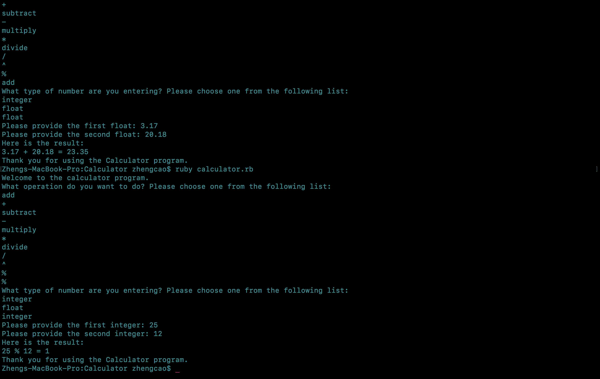A very basic calculator which can handle ➕ ➖✖️➗ ⌃ ⁒. This was my first officially graded project at Ada. And I finally knew how to write a reusable method with Ruby. Yeah! 🙌
Date: Feb 2018